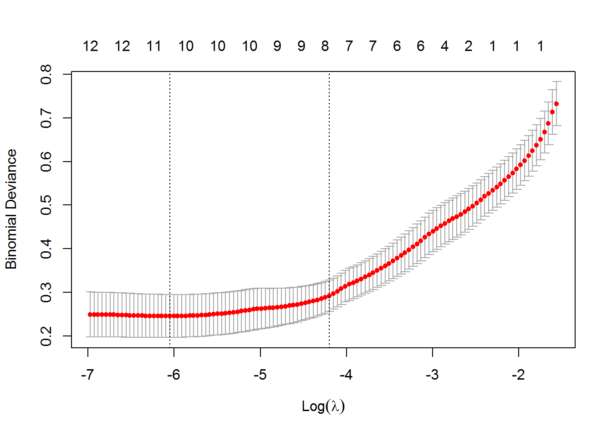
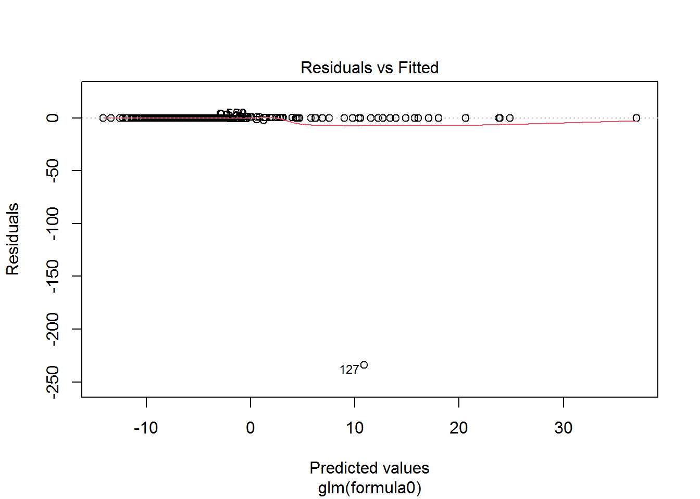
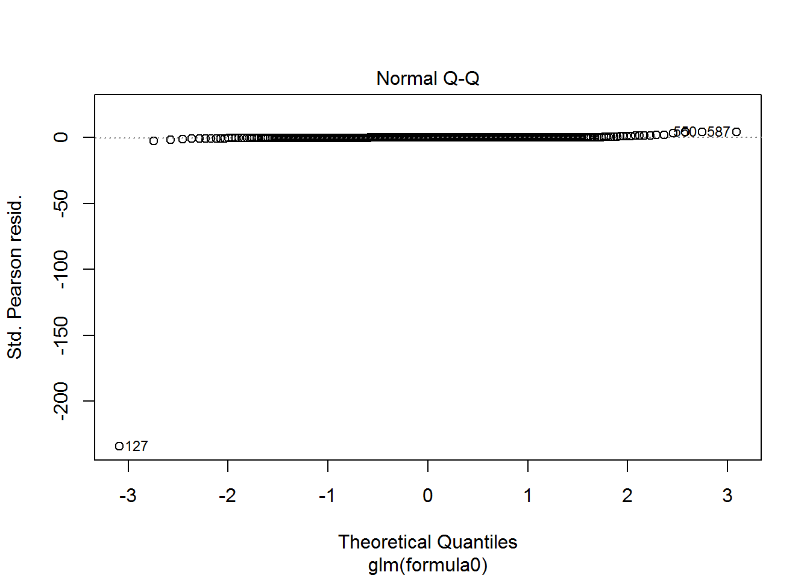
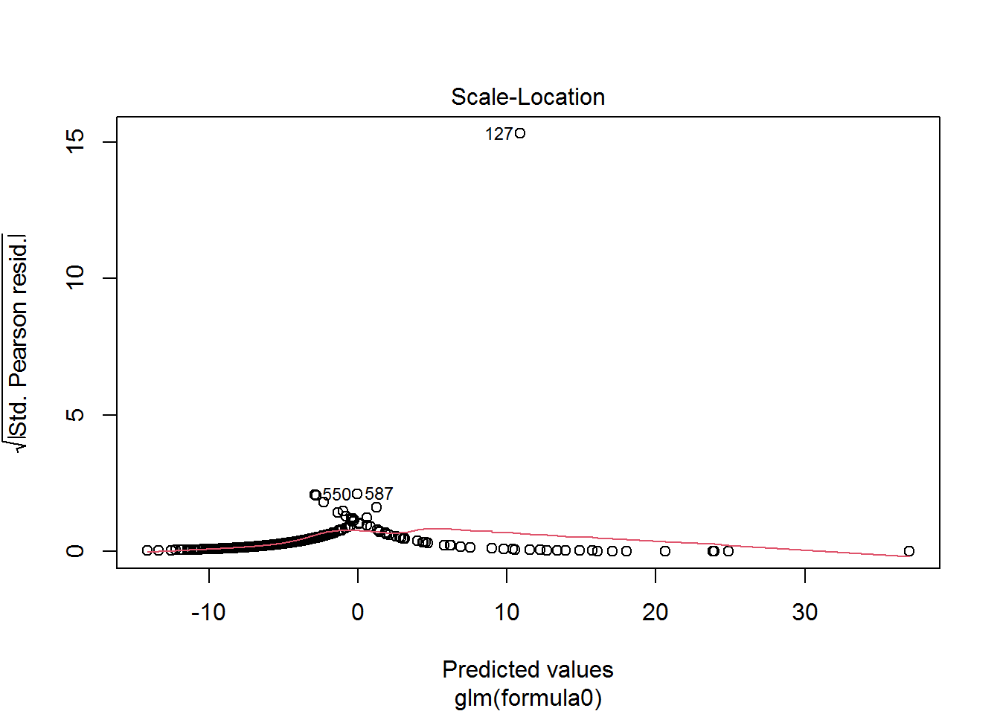
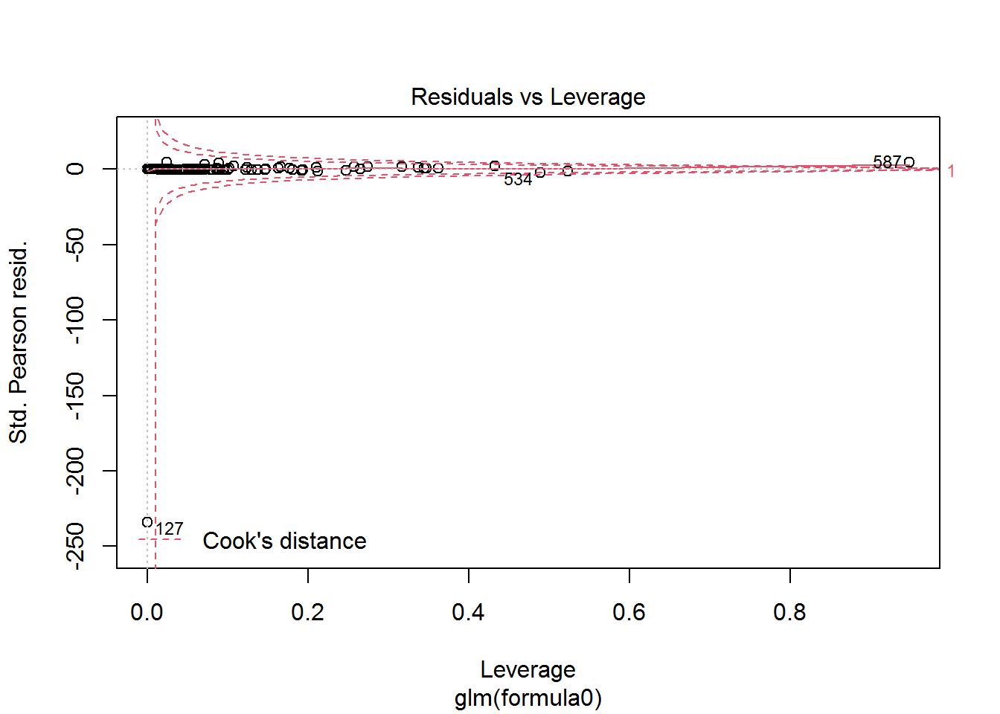

4 LOGISTIC REGRESSION
4.1 Data Partitioning
data<-read.csv("data/CleanedData.csv",header = T,colClasses=c("NULL", rep(NA, 13)))
set.seed(125)
V = 10
n = NROW(data); n0 = sum(data$Category==0); n1 = n-n0;
id.fold = 1:n
id.fold[data$Category==0] <- sample(x=1:V, size=n0, replace=TRUE)
id.fold[data$Category==1] <- sample(x=1:V, size=n1, replace=TRUE)
for (v in 1:V) {
train.v <- data[id.fold!=v, ]; test.v <- data[id.fold==v, ]
}
dim(train.v)## [1] 553 13dim(test.v)## [1] 62 134.2 5-Fold Cross Validation - Logistic Regression
set.seed(666)
V <- 5
n <- NROW(data); n0 <- sum(data$Category==0); n1 <- n-n0;
missclass.rate = c()
err_vec1=c()
for (v in 1:V) {
err_vec1=c(err_vec1, v)
missclass.rate=c(missclass.rate, v)
}
id.fold <- 1:n
id.fold[data$Category==0] <- sample(x=1:V, size=n0, replace=TRUE)
id.fold[data$Category==1] <- sample(x=1:V, size=n1, replace=TRUE)
for (v in 1:V) {
train.v <- data[id.fold!=v, ]; test.v <- data[id.fold==v, ];
formula0 = Category~.
X = model.matrix (as.formula(formula0), data = train.v)
y = factor(train.v$Category)
fit.lasso = glmnet(x=X, y=y, family="binomial", alpha=1,
lambda.min = 1e-4, nlambda = 100, standardize=T, thresh =
1e-07, maxit=1000)
CV = cv.glmnet(x=X, y=y, family="binomial", alpha = 1,
lambda.min = 1e-4, nlambda = 200, standardize = T,
thresh = 1e-07, maxit=1000)
best.lambda = CV$lambda.1se; #best.lambda
fit.best = glmnet(x=X, y=y, family="binomial", alpha = 1,
lambda=best.lambda, standardize = T,
thresh = 1e-07, maxit=1000)
formula0 = Category ~. # ALP + AST + BIL + CHOL + CREA + GGT + PROT
fit.final = glm(formula0, family = "binomial", data = train.v)
#summary(fit.final)
yobs = test.v$Category
X.test = test.v[, -1]
pred.glm = predict(fit.final, newdata = X.test, type="response")
#X.test <- model.matrix (as.formula(formula0), data = test.v)
#pred.glm <- predict(fit.best, newx = X.test, s=best.lambda, type="response")
mod = roc.area(yobs, pred.glm)$A
err_vec1[v] = mod
print(paste("AUC for fold", v, ":", err_vec1[v]))
pred.rate = ifelse(pred.glm > 0.5, 1, 0)
miss.rate <- mean(yobs != pred.rate)
missclass.rate[v] = miss.rate
print(paste("Missclassification rate for fold", v,
":",missclass.rate[v]))
}## [1] "AUC for fold 1 : 0.986036036036036"
## [1] "Missclassification rate for fold 1 : 0.0229007633587786"
## [1] "AUC for fold 2 : 0.98735119047619"
## [1] "Missclassification rate for fold 2 : 0.0403225806451613"
## [1] "AUC for fold 3 : 0.961974110032362"
## [1] "Missclassification rate for fold 3 : 0.0434782608695652"
## [1] "AUC for fold 4 : 0.992745535714286"
## [1] "Missclassification rate for fold 4 : 0.03125"
## [1] "AUC for fold 5 : 0.862745098039216"
## [1] "Missclassification rate for fold 5 : 0.0512820512820513"summary(fit.final)##
## Call:
## glm(formula = formula0, family = "binomial", data = train.v)
##
## Deviance Residuals:
## Min 1Q Median 3Q Max
## -4.6717 -0.1394 -0.0592 -0.0182 2.4267
##
## Coefficients:
## Estimate Std. Error z value Pr(>|z|)
## (Intercept) -16.446702 5.597463 -2.938 0.003301 **
## Age 0.004660 0.028344 0.164 0.869407
## Sexm -0.823760 0.743006 -1.109 0.267566
## ALB -0.184515 0.080182 -2.301 0.021380 *
## ALP -0.093058 0.021085 -4.413 1.02e-05 ***
## ALT -0.021020 0.012909 -1.628 0.103451
## AST 0.086780 0.021528 4.031 5.55e-05 ***
## BIL 0.078482 0.032325 2.428 0.015186 *
## CHE 0.158411 0.161415 0.981 0.326402
## CHOL -1.208569 0.369956 -3.267 0.001088 **
## CREA 0.026601 0.007313 3.637 0.000275 ***
## GGT 0.031680 0.007297 4.342 1.41e-05 ***
## PROT 0.342237 0.093626 3.655 0.000257 ***
## ---
## Signif. codes: 0 '***' 0.001 '**' 0.01 '*' 0.05 '.' 0.1 ' ' 1
##
## (Dispersion parameter for binomial family taken to be 1)
##
## Null deviance: 366.413 on 497 degrees of freedom
## Residual deviance: 85.039 on 485 degrees of freedom
## AIC: 111.04
##
## Number of Fisher Scoring iterations: 8plot(CV)
COMMENT We can see that the best parameter lambda is
Average.AUC.logis<-print(paste("Average of AUC:", mean(err_vec1)))## [1] "Average of AUC: 0.958170394059618"Average.miss.logis<-print(paste("Average of Miss:", mean(missclass.rate)))## [1] "Average of Miss: 0.0378467312311113"print(fit.best$beta)## 13 x 1 sparse Matrix of class "dgCMatrix"
## s0
## (Intercept) .
## Age .
## Sexm .
## ALB .
## ALP -0.0356445268
## ALT -0.0004724408
## AST 0.0424183660
## BIL 0.0194239225
## CHE .
## CHOL -0.4125065706
## CREA 0.0048351158
## GGT 0.0127957625
## PROT 0.0488338650best.lambda## [1] 0.01501008AUC.LOGIS<-mean(err_vec1)
miss.rate.LOIS<-mean(missclass.rate)4.3 Fitting the Best Model
plot(fit.final)
#fit.best$beta
final.fit<-glm(train.v$Category~ALP+ALT+AST+BIL+CHOL+CREA+GGT+PROT, family = (link = "binomial"), data = train.v)## Warning: glm.fit: fitted probabilities numerically 0 or 1 occurredcomment
Cross validation is used to select the best tuning parameter for the logistic regression.We can observe that the best lambda is 0.0204.We can also observe that,the coefficient(ALP,AST and CHOL) are all negative and thus have been shrunk to 0.Thus,we are left with the variables with the positive values.Also,we can observe that all the values the parameters with positive coefficient are statistically significant.
Average of AUC and Missclassification Rate;
We can observe that the average of the AUC from the V-folds is approximately 0.96 and misclassification of 0.04.This shows that model was good in making correct with predictions.